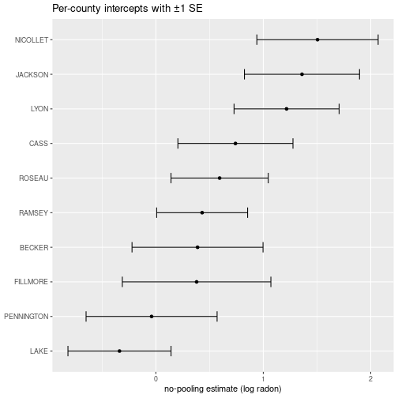

Lots of data has a grouping structure: students nested in classes, patients in hospitals, products in stores, measurements in counties. We want to estimate something for each group, but some groups have lots of data and some have very little.
Two obvious strategies — both bad — are at the extremes:
Hierarchical models (also called multilevel models) sit between these extremes. They share information across groups just enough to stabilize estimates for the small groups, while letting the big groups speak for themselves. The amount of sharing is learned from the data.
This lecture follows the canonical Gelman & Hill radon example, then briefly looks at varying-slope models for voting patterns.
Radon is a radioactive gas that seeps from soil into basements; chronic exposure causes thousands of lung-cancer deaths per year in the US. The level varies from county to county (geology) and from home to home (basement vs. ground floor, sealing, etc.).
We have 919 radon measurements from 85 counties in Minnesota. We want to estimate the typical log-radon level in each county — useful for public-health prioritization.
library(ggplot2)
library(dplyr)
library(lme4)
srrs2 <- read.table("data/srrs2.dat", header = TRUE, sep = ",",
stringsAsFactors = FALSE, strip.white = TRUE)
mn <- srrs2 %>% filter(state == "MN")
mn$radon <- mn$activity
mn$log.radon <- log(ifelse(mn$radon == 0, 0.1, mn$radon))
mn$county <- trimws(mn$county)
nrow(mn)## [1] 919length(unique(mn$county))## [1] 85The sample sizes per county are very unbalanced:
county_n <- mn %>% count(county, sort = TRUE)
range(county_n$n)## [1] 1 116head(county_n)## county n
## 1 ST LOUIS 116
## 2 HENNEPIN 105
## 3 DAKOTA 63
## 4 ANOKA 52
## 5 WASHINGTON 46
## 6 RAMSEY 32tail(county_n)## county n
## 80 ROCK 2
## 81 STEVENS 2
## 82 YELLOW MEDICINE 2
## 83 MAHNOMEN 1
## 84 MURRAY 1
## 85 WILKIN 1A few counties have dozens of measurements; many have only one or two. Lac Qui Parle has 2.
Assume every county has the same true log-radon level \(\mu\). Just take the overall mean:
mean(mn$log.radon)## [1] 1.224623sd(mn$log.radon)## [1] 0.8533272Equivalently, lm(log.radon ~ 1, data = mn). This is the complete-pooling estimate: every county gets the same value (about 1.22).
Pro: very stable estimate. Con: ignores the real fact that radon levels do vary across counties.
Estimate each county independently — fit a separate mean per county:
fit_no_pool <- lm(log.radon ~ county, data = mn)lm(y ~ county) with a categorical predictor is exactly “fit a different intercept for each county and don’t share anything across counties.”
Let’s pull out the per-county estimates and their standard errors:
s <- summary(fit_no_pool)
coefs <- as.data.frame(s$coefficients)
coefs$county <- sub("^county", "", rownames(coefs))
subset_for_plot <- coefs %>%
filter(county != "(Intercept)") %>%
slice(c(2, 10, 22, 30, 36, 40, 50, 55, 60, 65))
ggplot(subset_for_plot, aes(x = reorder(county, Estimate), y = Estimate)) +
geom_point() +
geom_errorbar(aes(ymin = Estimate - `Std. Error`,
ymax = Estimate + `Std. Error`), width = 0.3) +
coord_flip() +
labs(x = NULL, y = "no-pooling estimate (log radon)",
title = "Per-county intercepts with ±1 SE")
The error bars are huge for some counties — that’s the no-pooling pathology. Let’s look at Lac Qui Parle:
mn %>% filter(county == "LAC QUI PARLE") %>% select(zip, log.radon)## zip log.radon
## 1 56256 2.424803
## 2 56256 2.772589Two data points. Whatever the no-pooling estimate gives, we shouldn’t trust it much. Compare to Anoka, which has many:
nrow(mn %>% filter(county == "ANOKA"))## [1] 52In general, larger error bars mean smaller sample size. The no-pooling estimate doesn’t share information across counties — every county is on its own.
For Lac Qui Parle, we have very little data — we should “borrow” some information from what other counties look like. The reasonable thing is a weighted average between:
If the county had 30 measurements, we’d weight its own data heavily. With 2, we should weight the overall mean heavily. With 0, we’d be fully relying on the overall mean.
The amount of pooling should depend on (a) the sample size in the group and (b) how variable group means are across the population. Hierarchical models do this automatically.
We model the data as being generated in two stages.
Stage 1 (within county): each measurement is normal around its county’s true mean:
\[y_i \sim N(\alpha_{j[i]}, \sigma_y^2),\]
where \(j[i]\) is the county in which measurement \(i\) was taken, and \(\alpha_j\) is county \(j\)’s true log-radon level.
Stage 2 (across counties): the county means themselves are draws from a population:
\[\alpha_j \sim N(\mu_\alpha, \sigma_\alpha^2).\]
So we have two levels of randomness: variation between measurements within a county (\(\sigma_y\)), and variation between counties (\(\sigma_\alpha\)). The whole point of the model is that the \(\alpha_j\) are not independent free parameters — they share a common distribution that the data informs.
The hyperparameters \(\mu_\alpha\) and \(\sigma_\alpha\) are estimated from the data, along with the \(\alpha_j\) themselves.
The trichotomy can be read directly off the model:
Letting the data choose \(\sigma_\alpha\) is what gives the right amount of sharing.
lmerThe lme4 package fits these models. The syntax (1 | county) reads as “a random intercept that varies by county”:
fit_partial <- lmer(log.radon ~ (1 | county), data = mn)
summary(fit_partial)## Linear mixed model fit by REML ['lmerMod']
## Formula: log.radon ~ (1 | county)
## Data: mn
##
## REML criterion at convergence: 2259.4
##
## Scaled residuals:
## Min 1Q Median 3Q Max
## -4.4661 -0.5734 0.0441 0.6432 3.3516
##
## Random effects:
## Groups Name Variance Std.Dev.
## county (Intercept) 0.09581 0.3095
## Residual 0.63662 0.7979
## Number of obs: 919, groups: county, 85
##
## Fixed effects:
## Estimate Std. Error t value
## (Intercept) 1.31258 0.04891 26.84The key numbers:
Random effects county (Intercept): this is \(\hat{\sigma}_\alpha\) — how much county means vary.Random effects Residual: this is \(\hat{\sigma}_y\) — within-county spread.Fixed effects (Intercept): this is \(\hat{\mu}_\alpha\) — the average across counties.The lme4 output partitions parameters into “fixed effects” and “random effects”:
The terminology is inconsistent across textbooks and papers, and pretty confusing. Just remember: random effects = “modelled as drawn from a distribution”; fixed effects = “everything else.”
ranef_county <- coef(fit_partial)$county
ranef_county["LAC QUI PARLE", , drop = FALSE]## (Intercept)
## LAC QUI PARLE 1.610139mean(mn$log.radon[mn$county == "LAC QUI PARLE"])## [1] 2.598696mean(mn$log.radon)## [1] 1.224623That’s the partial-pooling magic: information from the other 84 counties tells us that Minnesota counties don’t have wildly different log-radon levels, so when a county gives us very little data, we shouldn’t trust its raw mean too much.
For a county with many measurements (Anoka), partial pooling barely moves the estimate — the county’s own data dominates.
The floor on which the measurement was taken matters: basement measurements (floor = 0) tend to be higher than ground-floor measurements (floor = 1).
fit_floor <- lmer(log.radon ~ floor + (1 | county), data = mn)
summary(fit_floor)## Linear mixed model fit by REML ['lmerMod']
## Formula: log.radon ~ floor + (1 | county)
## Data: mn
##
## REML criterion at convergence: 2171.3
##
## Scaled residuals:
## Min 1Q Median 3Q Max
## -4.3989 -0.6155 0.0029 0.6405 3.4281
##
## Random effects:
## Groups Name Variance Std.Dev.
## county (Intercept) 0.1077 0.3282
## Residual 0.5709 0.7556
## Number of obs: 919, groups: county, 85
##
## Fixed effects:
## Estimate Std. Error t value
## (Intercept) 1.46160 0.05158 28.339
## floor -0.69299 0.07043 -9.839
##
## Correlation of Fixed Effects:
## (Intr)
## floor -0.288The floor coefficient gives the average effect of moving up one floor on log-radon (holding county constant). It’s negative — moving up reduces radon, as expected.
We could also let the effect of floor vary by county — maybe in some counties basements matter more than in others (ceiling heights, ventilation, etc.):
fit_random_slopes <- lmer(log.radon ~ floor + (floor | county), data = mn)
summary(fit_random_slopes)## Linear mixed model fit by REML ['lmerMod']
## Formula: log.radon ~ floor + (floor | county)
## Data: mn
##
## REML criterion at convergence: 2168.3
##
## Scaled residuals:
## Min 1Q Median 3Q Max
## -4.4044 -0.6224 0.0138 0.6123 3.5682
##
## Random effects:
## Groups Name Variance Std.Dev. Corr
## county (Intercept) 0.1216 0.3487
## floor 0.1181 0.3436 -0.34
## Residual 0.5567 0.7462
## Number of obs: 919, groups: county, 85
##
## Fixed effects:
## Estimate Std. Error t value
## (Intercept) 1.46277 0.05387 27.155
## floor -0.68110 0.08758 -7.777
##
## Correlation of Fixed Effects:
## (Intr)
## floor -0.381The model is now
\[y_i \sim N(\alpha_{j[i]} + \beta_{j[i]} x_i,\ \sigma_y^2), \qquad \begin{pmatrix} \alpha_j \\ \beta_j \end{pmatrix} \sim N\!\left(\begin{pmatrix}\mu_\alpha \\ \mu_\beta\end{pmatrix},\ \Sigma\right),\]
where \(\Sigma\) allows the intercepts and slopes to be correlated across counties (do high-baseline counties have stronger floor effects?).
Suppose we want to predict log-radon for a new ground-floor measurement in Lac Qui Parle. The fitted model gives us \(\hat{\alpha}_{LQP}\) and \(\hat\beta_{LQP}\); we plug into
\[y_{\text{new}} \sim N(\hat\alpha_{LQP} + \hat\beta_{LQP} \cdot 1,\ \hat\sigma_y^2).\]
library(arm) # for sigma.hat()
sig_y <- sigma.hat(fit_random_slopes)$sigma$data
coef_lqp <- as.numeric(coef(fit_random_slopes)$county["LAC QUI PARLE", ])
x_new <- 1
y_new <- rnorm(1000, mean = coef_lqp %*% c(1, x_new), sd = sig_y)
quantile(y_new, c(0.025, 0.975))## 2.5% 97.5%
## -0.1724486 2.7498475The 95% predictive interval for log-radon. Exponentiate to get the interval for raw radon.
This is the interesting one. We don’t have \(\alpha\) and \(\beta\) for the new county — but the model tells us how county-level parameters are distributed. We draw \((\alpha, \beta)\) from the population distribution, then draw a \(y\) given those:
library(MASS) # for mvrnorm()
# Pull the estimated population-level parameters
vc <- VarCorr(fit_random_slopes)$county
Sigma <- matrix(vc, nrow = 2, dimnames = dimnames(vc))
mu <- fixef(fit_random_slopes)
random_params <- mvrnorm(n = 1000, mu = mu, Sigma = Sigma)
x_new <- 1
y_new_unknown <- rnorm(1000,
mean = random_params %*% c(1, x_new),
sd = sig_y)
quantile(y_new_unknown, c(0.025, 0.975))## 2.5% 97.5%
## -0.7871038 2.3904607The interval is wider than for a known county — and it should be, because for a new county we have to integrate over our uncertainty about where its \(\alpha\) and \(\beta\) sit.
This kind of prediction is one of the big practical benefits of hierarchical models: you get principled uncertainty quantification for groups you’ve never seen.
This is the running example in Gelman’s Red State, Blue State, Rich State, Poor State (2009). The puzzle: rich states tend to vote Democratic, but rich voters tend to vote Republican. How can both be true?
Let \(y_i = 1\) if person \(i\) voted Republican, \(x_i\) be income (rescaled), and \(s[i]\) be their state.
A first (“baseline”) model:
\[P(y_i = 1) = \operatorname{logit}^{-1}(\alpha_{s[i]} + \beta x_i).\]
State intercepts \(\alpha_{s[i]}\) vary, but the income effect \(\beta\) is the same in every state. This is a hierarchical logistic regression — fit as
glmer(bush ~ income + (1 | state), data = polls, family = binomial)A better model lets the income slope vary too:
\[P(y_i = 1) = \operatorname{logit}^{-1}(\alpha_{s[i]} + \beta_{s[i]} x_i).\]
glmer(bush ~ income + (income | state), data = polls, family = binomial)The fitted \(\beta_{s}\)’s differ substantially: in poor states (Mississippi), income strongly predicts voting Republican. In rich states (Connecticut), income barely matters or even reverses. That state-level heterogeneity is what dissolves the rich-state/rich-voter paradox.
This is a place where you really need a varying-slope hierarchical model — a plain logistic regression with state fixed effects would miss the substantive finding entirely.
The radon model pooled continuous measurements. The same machinery works for counts of successes — here, a binomial multilevel logistic regression.
Shaquille O’Neal was a great basketball player and a famously bad free-throw shooter (bad enough that “Hack-a-Shaq” — deliberately fouling him — was a real strategy). We have his makes and attempts across a set of games. The question: is he uniformly bad, or does he have good games and bad games — and how much of the game-to-game variation is real, versus luck in a handful of attempts?
We’ll build a Shaq-like dataset. (This is also the “generate fake data from the model” exercise: the DGP below is the model we then fit — decide a and sigma, draw a per-game offset a_g ~ Normal(0, sigma), and simulate makes.)
library(lme4)
library(dplyr)
set.seed(1626)
n_games <- 23
a_true <- qlogis(0.45) # baseline: ~45% on an average game
sigma_true<- 0.5 # game-to-game spread on the logit scale
shaq <- data.frame(
game = 1:n_games,
attempts = sample(4:20, n_games, replace = TRUE) # opportunities per game (given, not modelled)
)
a_g <- rnorm(n_games, 0, sigma_true) # per-game offset
p_g <- plogis(a_true + a_g) # per-game make probability
shaq$scored <- rbinom(n_games, shaq$attempts, p_g) # makes
shaq$missed <- shaq$attempts - shaq$scored
head(shaq)## game attempts scored missed
## 1 1 12 5 7
## 2 2 15 10 5
## 3 3 13 1 12
## 4 4 14 3 11
## 5 5 16 4 12
## 6 6 12 2 10Complete pooling — one number for Shaq, ignoring games:
sum(shaq$scored) / sum(shaq$attempts)## [1] 0.3392226No pooling — each game on its own (scored / attempts is the MLE per game):
shaq$p_hat <- shaq$scored / shaq$attempts # per-game MLE
head(shaq[, c("game", "scored", "attempts", "p_hat")])## game scored attempts p_hat
## 1 1 5 12 0.41666667
## 2 2 10 15 0.66666667
## 3 3 1 13 0.07692308
## 4 4 3 14 0.21428571
## 5 5 4 16 0.25000000
## 6 6 2 12 0.16666667Some games look far better or worse than others — but a game with only a handful of attempts can read very high or very low off a single make or miss, so those extremes are mostly noise. Partial pooling is the fix, exactly as with radon: shrink small-sample games toward the overall rate.
The data are summarised (makes-out-of-attempts), not one row per shot, so we use the cbind(successes, failures) response syntax instead of expanding to 0/1 rows:
m <- glmer(cbind(scored, missed) ~ 1 + (1 | game),
data = shaq, family = binomial)
summary(m)$coefficients # fixed effect: the baseline intercept a## Estimate Std. Error z value Pr(>|z|)
## (Intercept) -0.7737149 0.2206713 -3.506187 0.0004545762as.data.frame(VarCorr(m)) # random-effect SD: sigma (game-to-game spread)## grp var1 var2 vcov sdcor
## 1 game (Intercept) <NA> 0.6225979 0.7890487Read it like the radon output. The fixed intercept is \(a\) (the average-game logit); the random effect gives \(\hat\sigma\), the spread of the per-game offsets \(a_g \sim \mathrm{Normal}(0, \sigma)\). Turn that into a plausible range of game-level make probabilities — an average game, a good day (\(+2\sigma\)), a bad day (\(-2\sigma\)):
a_hat <- fixef(m)[1]
sigma_hat <- as.data.frame(VarCorr(m))$sdcor[1]
plogis(a_hat + c(bad_day = -2, average = 0, good_day = 2) * sigma_hat)## bad_day average good_day
## 0.08692182 0.31567604 0.69091116If \(\hat\sigma\) were near zero, the games would be indistinguishable (partial pooling collapses to complete pooling — “uniformly bad”). A clearly positive \(\hat\sigma\) says the good-day/bad-day gap is real, not just small-sample luck. Note there’s no automatic “are the games different?” hypothesis test here; the model instead quantifies the spread and lets you read off the plausible range.
A caveat baked into the model: it assumes every attempt within a game shares one probability. In reality misses may be streaky (miss one, get discouraged, miss the next) — a fancier model could relax that.
A consulting problem (for CBC) with the same grouped-data flavour, done with a generalized linear model rather than lmer. Municipal inspectors visit restaurants and record major and minor violations. CBC wanted a single national ranking of restaurant chains by food-safety compliance. The obstacle: different cities train inspectors to different standards — far fewer violations are recorded in Calgary than in Toronto, largely because of what counts as a violation there, not because Calgary restaurants are cleaner. Ranking within each city is easy (just count); the hard part is a unified ranking that adjusts for the city standards.
The trick is to define what you rank by precisely: if a Toronto-trained inspector walked into a random location of chain \(c\), how many major violations would they record on average? Model the count as Poisson with a multiplicative mean:
\[\mathbb{E}[\text{violations}] = \lambda_0 \cdot (\text{city factor}_{\,\text{city}}) \cdot (\text{chain factor}_{\,\text{chain}}).\]
Multiplicative (not additive) is the natural choice, and it’s exactly what a Poisson regression with a log link gives you:
glm(violations ~ city + chain, family = poisson, data = inspections)because \(\log \mathbb{E}[\text{violations}] = \log\lambda_0 + (\text{city term}) + (\text{chain term})\) exponentiates to a product. Multiplicative makes sense: you wouldn’t say “Toronto always adds one violation,” you’d say “what counts as 1.5 violations in Vancouver is 2 in Toronto” — a ratio. Likewise across chains: “for every violation at Starbucks, expect two at Second Cup” is more sensible than a fixed additive offset.
To rank, fix the city factor at the Toronto standard and read off the chain factors. Each chain’s estimate comes with a confidence interval (few inspection visits → a wide interval, like estimating a coin’s bias from a handful of flips). When two chains’ intervals overlap, their ranking is not resolved — the apparent order could be luck. That uncertainty is the honest output, not a single hard-ranked list.
Note this uses fixed city and chain effects, not the partial pooling of the rest of these notes — but it’s the same core move: model the group (city) you don’t care about so you can compare the thing (chain) you do. With many chains seen in few cities, layering partial pooling on the chain effects would be the natural next step.
Everything above can be reformulated as Bayesian inference:
Tools like Stan, rstanarm, and brms fit these models fully Bayesianly. For the radon example:
library(rstanarm)
stan_lmer(log.radon ~ floor + (floor | county), data = mn)returns posterior samples for every parameter, including each county’s \(\alpha_j\). Useful when you want full uncertainty quantification (e.g. for the rare-county-prediction case above) and when you want to use weakly informative priors to stabilize the model further on small data.
For grouped data, the spectrum is:
| \(\sigma_\alpha\) | What it says | |
|---|---|---|
| Complete pooling | \(0\) | “Groups are all the same” |
| Partial pooling | \(0 < \sigma_\alpha < \infty\) | “Groups differ — but in a structured way” |
| No pooling | \(\infty\) | “Groups are unrelated” |
The complete-pooling and no-pooling extremes are special cases of the hierarchical model, with \(\sigma_\alpha\) forced to a particular value. Letting \(\sigma_\alpha\) be estimated from the data is almost always better than picking an extreme. The intuition: if there’s no group-level variation, the data will tell you so (\(\hat\sigma_\alpha \approx 0\), partial pooling collapses to complete pooling). If groups are genuinely unrelated, the data tells you that too (\(\hat\sigma_\alpha\) large, partial pooling collapses to no pooling). You don’t have to choose.
Wherever you see grouped data — students in classrooms, patients across hospitals, products across stores, repeated measurements per subject — partial pooling is a strong default.